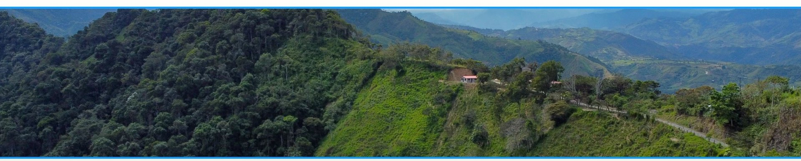

Cumplimiento, diálogo y acceso público
Transparencia Institucional y Canales de Participación
Consolidamos nuestra operación bajo marcos regulatorios transparentes, rigurosos estándares socioambientales internacionales y canales directos de diálogo con las comunidades del Valle de Intag.
Marco Regulatorio y Estándares Internacionales
Verificación de cumplimiento legal, ambiental y social ante el Estado y organismos multilaterales.
Marco Regulatorio Nacional
✓ Aprobado Certificado de Calificación e Idoneidad Técnica
Ministerio de Energía y Minas · Aprobado
✓ Aprobado Aprobación de Interconexión Eléctrica
Subestación Manduriacu · Aprobado
✓ Aprobado Autorización de Aprovechamiento Productivo del Agua y Caudal Ecológico
Aprobado
✓ Aprobado Dictamen Favorable del Proceso de Participación Ciudadana
Consulta Ambiental · Aprobado
✓ Vigente Licencia Ambiental Oficial Emitida
Julio 2026 · Vigente
Expedientes técnicos y administrativos debidamente certificados ante los entes de control correspondientes.
Estándares Multilaterales y Criterios ESG (IFC)
IFC
Operamos bajo normativas internacionales que exigen los más altos niveles de debida diligencia ambiental, social y de derechos humanos, complementando la legislación ecuatoriana.
- Norma de Desempeño 1 de la IFC: Evaluación y gestión de riesgos socioambientales.
- Norma de Desempeño 2 de la IFC: Trabajo y condiciones laborales.
- Norma de Desempeño 3 de la IFC: Eficiencia del uso de los recursos y prevención de la contaminación.
- Norma de Desempeño 4 de la IFC: Salud y seguridad de la comunidad.
- Norma de Desempeño 5 de la IFC: Adquisición de tierras y reasentamiento involuntario.
- Norma de Desempeño 6: Conservación de la biodiversidad y gestión sostenible de los recursos naturales vivos.
- Norma de Desempeño 7: Pueblos Indígenas.
- Norma de Desempeño 8: Patrimonio cultural.
[Espacio Reservado · Fase 2: Repositorio de Resúmenes Ejecutivos y Monitoreos Bióticos en PDF]

Oportunidades Locales y Desarrollo Territorial
Procesos transparentes de registro para la vinculación progresiva de mano de obra y servicios locales.
La incorporación de personal y la contratación de proveedores se ejecutará de manera gradual conforme avancen las distintas fases operativas del proyecto. Se priorizará estrictamente la mano de obra local, así como los emprendimientos familiares y comunitarios de las 14 comunidades del Área de Influencia Directa (AID).
Registro de Hojas de Vida
Bolsa de Empleo Comunitario
Bienes y Servicios de la Zona
Registro de Proveedores Locales
Sistema de Atención Ciudadana (PQR)
Canal formal para registrar requerimientos, solicitudes y observaciones con garantía de seguimiento metódico.
Registro confidencial o anónimo disponible. Puedes adjuntar archivos o fotografías que respalden tu solicitud.
Preguntas Frecuentes y Claridad Técnica
Información transparente sobre la naturaleza, límites y compromisos del Proyecto Nasca.
01 ¿Tiene el Proyecto Nasca alguna relación con actividades mineras?
No. Nasca es un proyecto hidroeléctrico 100% independiente de cualquier interés o concesión minera. Su único fin es generar energía renovable para el país. No extrae minerales ni suministra recursos a actividades extractivas.
02 ¿Cómo funciona una Central de Pasada y por qué no afecta el río?
Una central de pasada toma una fracción del caudal mediante una obra lateral, sin represar el río, la conduce por un túnel subterráneo hasta la casa de máquinas y devuelve el 100% del agua a su cauce natural, respetando el caudal ecológico.
03 ¿Cómo se coordinan las contrataciones y compras en el territorio?
A través de los registros de Hojas de Vida y de Bienes y Servicios de esta página. La incorporación es gradual según las fases del proyecto y prioriza la mano de obra y los emprendimientos de las 14 comunidades del AID.
04 ¿Cómo se hace seguimiento a una solicitud o reclamo ingresado?
Cada solicitud radicada en el Sistema de Atención Ciudadana (PQR) recibe un número de caso y es atendida por el equipo de relacionamiento comunitario, con respuesta por el canal de contacto indicado o en las sedes de atención en territorio.